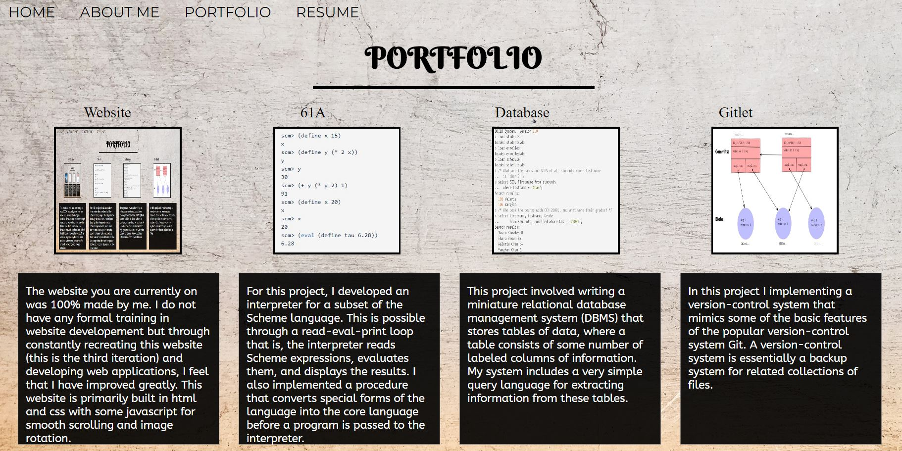
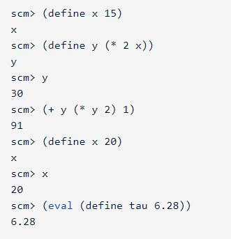
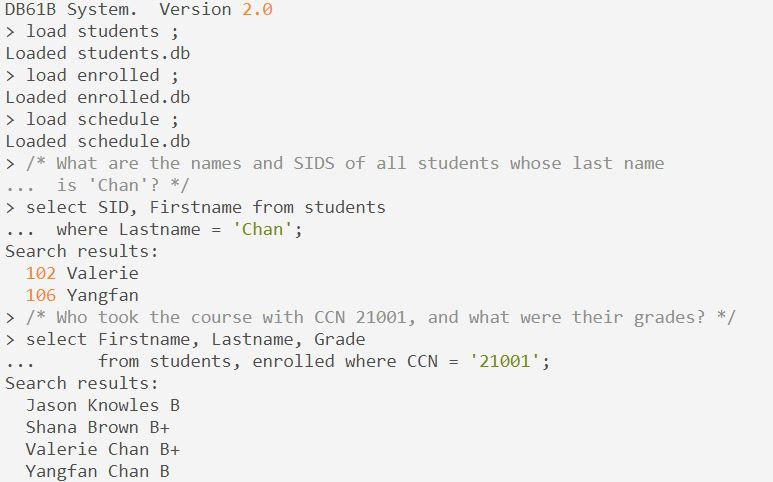
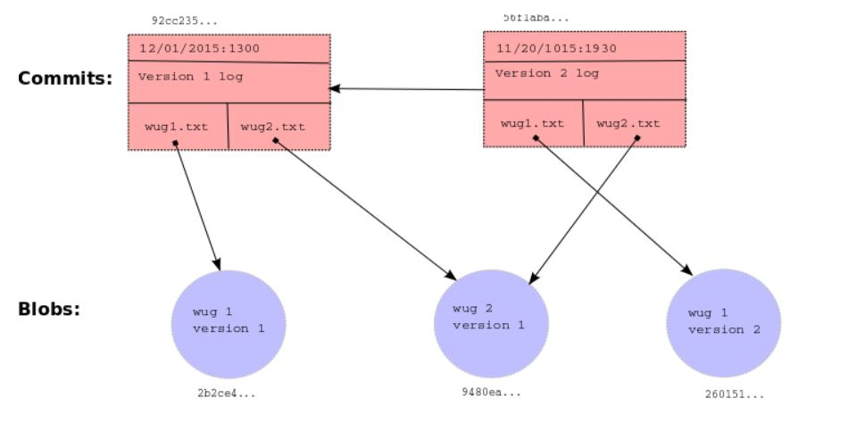

About Me

Text Text Text Text Text Text Text Text Text Text Text Text Text Text Text Text Text Text Text Text Text Text Text Text Text Text Text Text Text Text Text Text Text Text Text Text Text Text Text Text Text Text Text Text Text Text Text Text Text Text Text Text Text Text Text Text Text Text Text Text Text Text Text Text Text Text Text Text Text Text Text Text Text Text Text Text Text Text Text Text Text Text Text Text Text Text Text Text Text Text Text Text Text Text Text Text Text Text Text Text Text Text Text Text Text Text Text Text Text Text Text Text Text Text Text
PORTFOLIO
- Website
- Interpreter
- Database
- Gitlet
- 
- 
- 
- 
The website you are currently on was 100% made by me. I do not have any formal training in website developement but through constantly updating this website (this is the third iteration) and developing web applications, I feel that I have improved greatly. This website is primarily built in html and css with some javascript for smooth scrolling and image rotation.
For this project, I developed an interpreter for a subset of the Scheme language. This is possible through a read-eval-print loop that is, the interpreter reads Scheme expressions, evaluates them, and displays the results. I also implemented a procedure that converts special forms of the language into the core language before a program is passed to the interpreter.
This project involved writing a miniature relational database management system (DBMS) that stores tables of data, where a table consists of some number of labeled columns of information. My system includes a very simple query language for extracting information from these tables.
In this project I implemented a version-control system that mimics some of the basic features of the popular version-control system Git. A version-control system is essentially a backup system for related collections of files.